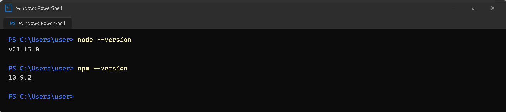
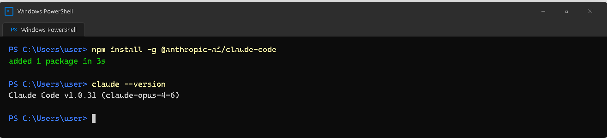
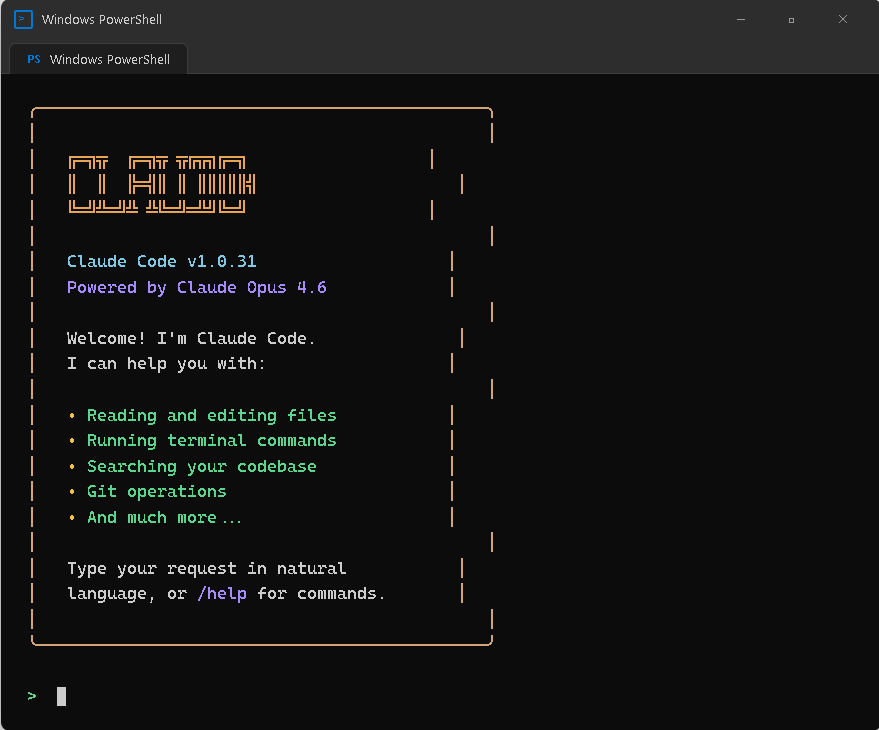
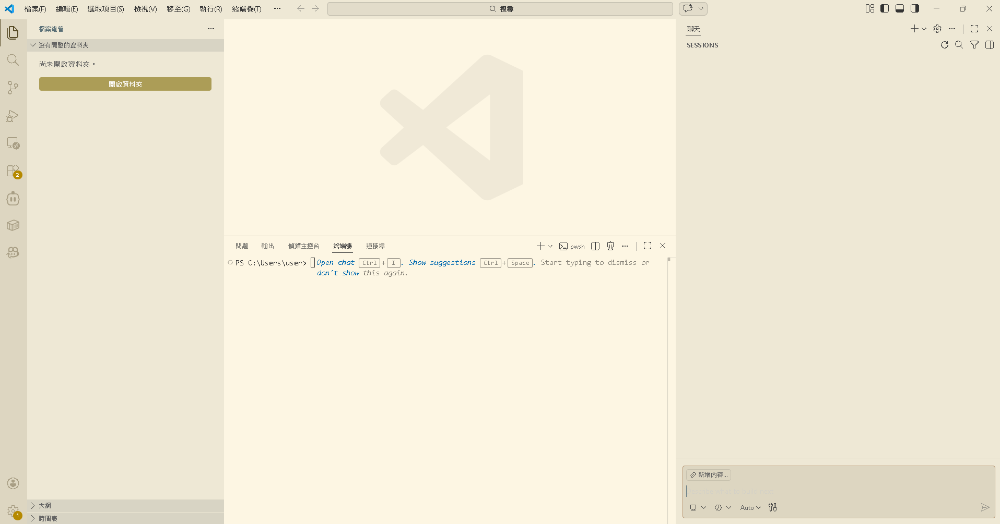

AI Agent 自主代理三王實戰
住在終端機裡的 AI 特助——沒有花俏畫面，但做事又快又精準。用中文對話就能讀檔、改檔、管版本！
Claude Code 是 Anthropic 公司推出的終端機 AI 助手。所謂「終端機」，就是那個讓你輸入指令、按 Enter 執行的命令列視窗（Windows 上叫做 PowerShell）。
一切都是文字——你打字問它，它打字回你，中間穿插著它在你電腦上執行的各種操作。正因為直接在終端機裡運作，它可以執行任何你在命令列上能做的事情。
| 場景 | 用 Antigravity | 用 Claude Code |
|---|---|---|
| 從零做一個網頁 | ✅ 更適合（有預覽） | 可以做但看不到即時預覽 |
| 修改一個設定檔 | 可以但大材小用 | ✅ 更適合（快速精準） |
| 批次重命名 100 個檔案 | 不太方便 | ✅ 一個指令搞定 |
| Git 操作（commit、push） | 可以但步驟多 | ✅ 用對話就好 |
| 安裝和設定軟體 | 可以 | ✅ 直接執行指令 |
| 理解整個專案結構 | 可以 | ✅ 快速掃描全部檔案 |
Claude Code 需要 Node.js 才能運行。安裝過程非常簡單，只需要幾個步驟。
打開瀏覽器，前往 https://nodejs.org/，選擇左邊的 LTS（長期支援版），點擊下載。
下載完成後，執行安裝程式。一路按「Next」、「I agree」、「Install」就好，不需要更改任何設定。
打開 PowerShell（按 Windows 鍵，搜尋 PowerShell），輸入：
node --version
如果看到類似 v22.x.x 或 v24.x.x 的版本號碼，就表示安裝成功了。

node --version 檢查一下就好。
Node.js 裝好之後，在 PowerShell 裡輸入：
npm install -g @anthropic-ai/claude-code
安裝過程可能需要一到兩分鐘。安裝完成後，確認版本：
claude --version

在 PowerShell 裡輸入 claude，第一次啟動會要求登入：
sk-ant- 開頭的 Key 貼上去
Claude Code 跟一般聊天機器人最大的不同：它不只是回答問題，它會直接在你的電腦上行動。
你好，請用中文跟我說話
Claude Code 會用中文回覆你。跟 ChatGPT 一樣，只是發生在終端機裡。
我的電腦上有裝 Node.js 嗎？是什麼版本？
它會真的去你的電腦上執行 node --version，然後把結果告訴你。
幫我看一下目前這個資料夾裡有什麼
Claude Code 會列出所有的檔案和子資料夾，通常還會附上簡短說明。
cd D:\Moltbot 切換過去，再輸入 claude。
讀取、修改、建立、搜尋——全部用對話就能完成，不需要自己打開檔案、找到那一行、小心翼翼地修改。
幫我讀取 config.json 的內容
會把檔案完整內容顯示出來，還附上它的理解和說明。
幫我把 config.json 裡的 port 從 3000 改成 18789
先讀取、找到、修改、存檔，兩秒內完成。還會告訴你改了什麼。
幫我建立一個 hello.txt， 內容寫「第一個檔案」
Claude Code 會建好檔案，你可以用檔案總管打開確認。
幫我在這個專案裡搜尋 所有包含 "API_KEY" 的檔案
快速掃描所有檔案，列出哪些檔案的哪幾行包含關鍵字。
Git 就是你檔案的「時光機」。它會幫你記住每一次修改的歷史——你什麼時候改了什麼、為什麼改。有了 Claude Code，你完全不需要學 Git 的指令。
| 操作 | 跟 Claude Code 說什麼 | 背後的 Git 指令 |
|---|---|---|
| 初始化 Git | 幫我初始化 Git | git init |
| 儲存一個版本 | 幫我 commit，訊息寫「完成首頁」 | git add + git commit |
| 查看歷史 | 幫我看最近的 Git 歷史紀錄 | git log |
| 回到舊版本 | 幫我把 config.json 恢復到上一版 | git checkout / restore |
按住鍵盤上的空白鍵（Space）不放，就會進入語音模式。對著麥克風說出你的需求（中文即可），說完後放開空白鍵。Claude Code 會把語音轉成文字，然後像平常一樣執行操作。
看著另一份文件時，同時讓 Claude Code 做事
複雜需求用說的比打字快
暫時不方便打字時使用
| 指令 | 功能 | 什麼時候用 |
|---|---|---|
/help | 顯示說明文件 | 不確定怎麼操作的時候 |
/clear | 清除對話歷史 | 想重新開始的時候 |
/compact | 壓縮對話記憶 | 對話太長、反應變慢時 |
/cost | 顯示 API 使用量 | 想確認花了多少錢時 |
/doctor | 診斷設定 | 遇到問題的時候 |
Ctrl+` 打開終端機面板claude一邊在 VS Code 的編輯區看檔案，一邊在下方的終端機裡跟 Claude Code 對話。修改的檔案會即時反映在編輯區。

試著用 Claude Code 完成以下操作：
# 步驟 1：建立資料夾 幫我在 D 槽建立一個叫做「龍蝦練習」的資料夾 # 步驟 2：建立設定檔 在「龍蝦練習」裡建立 config.json # 步驟 3：修改設定 幫我把 config.json 裡的 name 改成「阿亮的龍蝦小助手」 # 步驟 4：確認結果 幫我讀一下 config.json，確認修改結果 # 步驟 5：版本控制 幫我初始化 Git，然後 commit，訊息寫「初始設定完成」9 / 10
Claude Code 是住在終端機裡的 AI 特助，做事快速而精準，用中文對話即可操作。
安裝了 Node.js → 安裝 Claude Code → 完成首次登入，三步搞定。
讀取、修改、建立、搜尋——全部用對話完成，不需要自己動手。
用 Git 版本控制保存每一步，永遠不怕改壞了回不去。
你的任務是什麼？
│
├─ 要「建造」新東西（網頁、應用程式、專案）
│ └→ 用 Antigravity（有預覽、有多 Agent）
│
├─ 要「操作」現有的東西（改設定、管檔案、跑指令）
│ └→ 用 Claude Code（快速、精準、直接）
│
├─ 要除錯或解決問題
│ └→ 兩個都行，看你手邊開著哪個
│
└─ 不確定
└→ 先試 Claude Code（啟動快、輕量）
📖 下一章預告：CH4 三王聯手實戰練習
把 Antigravity 和 Claude Code 結合起來，分工合作完成一個完整的小專案——「龍蝦 AI 個人檔案產生器」！